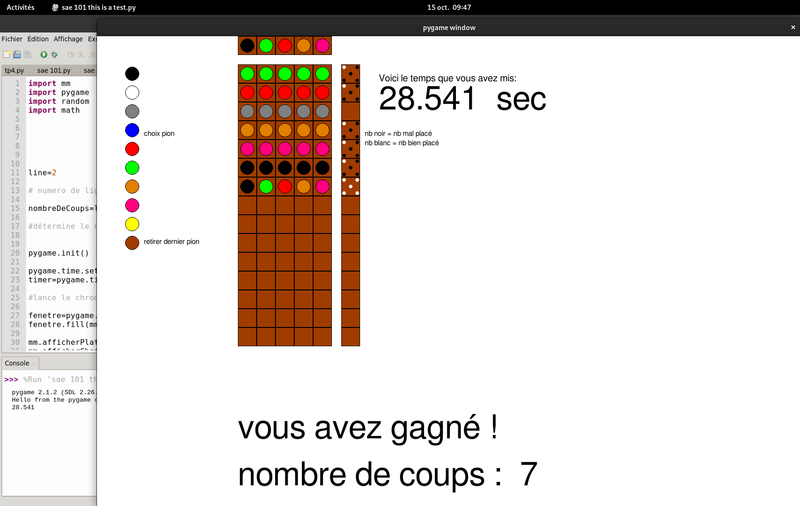
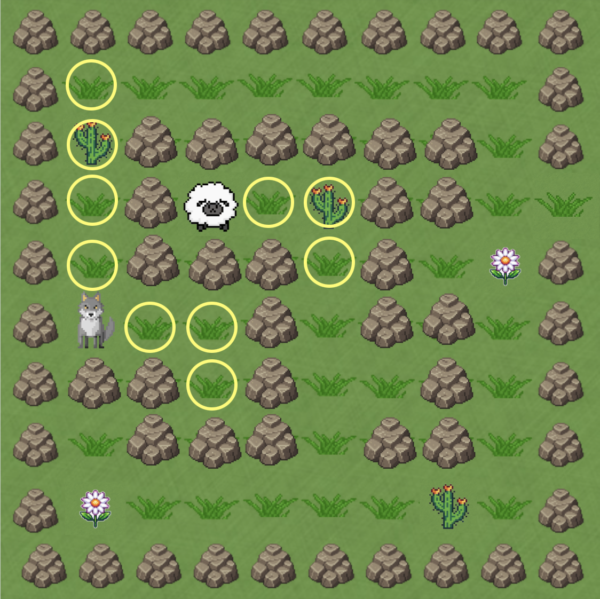
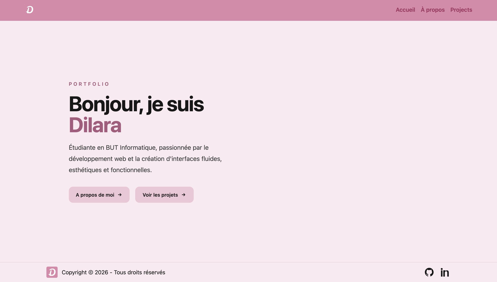
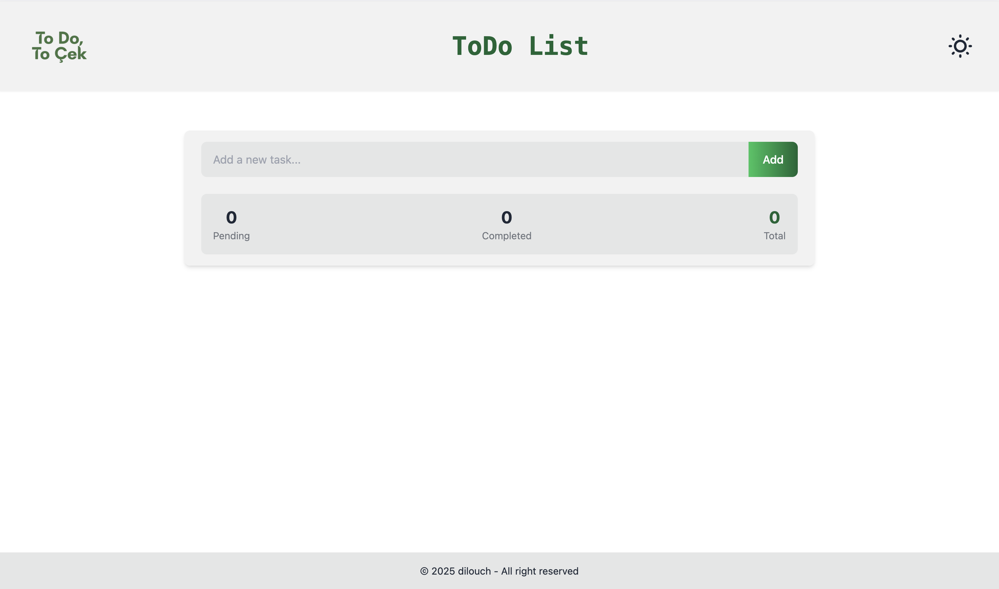
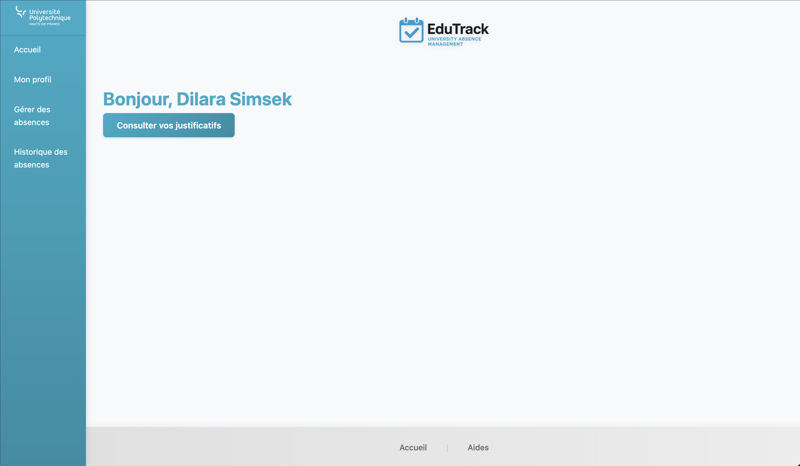
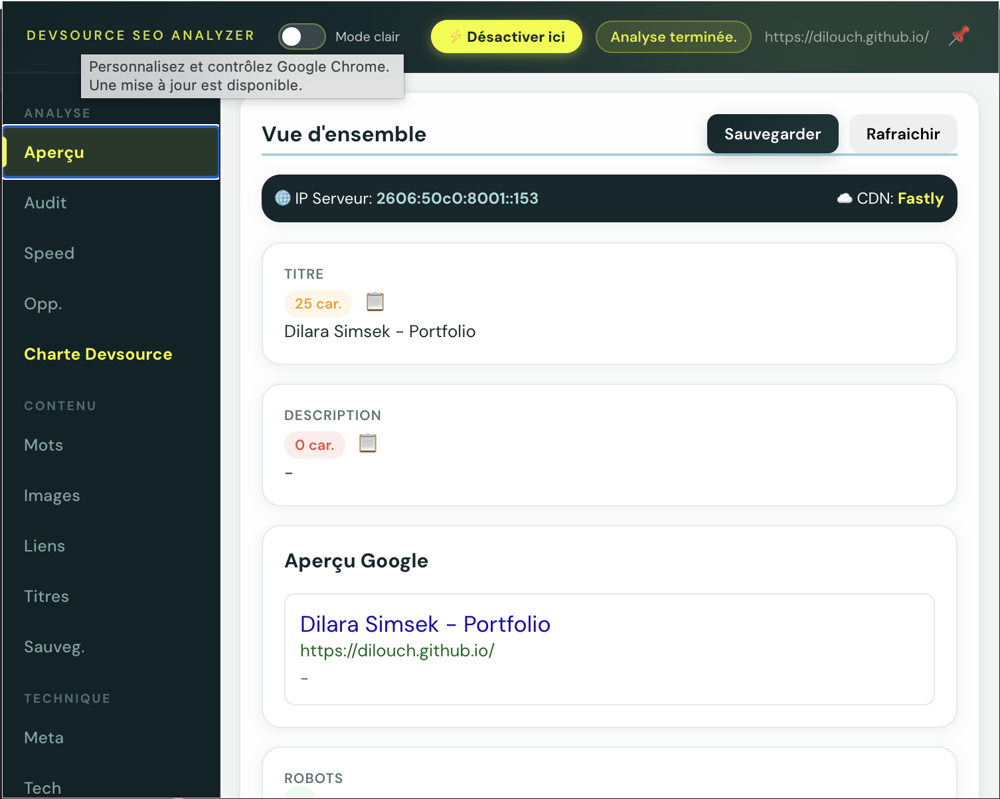
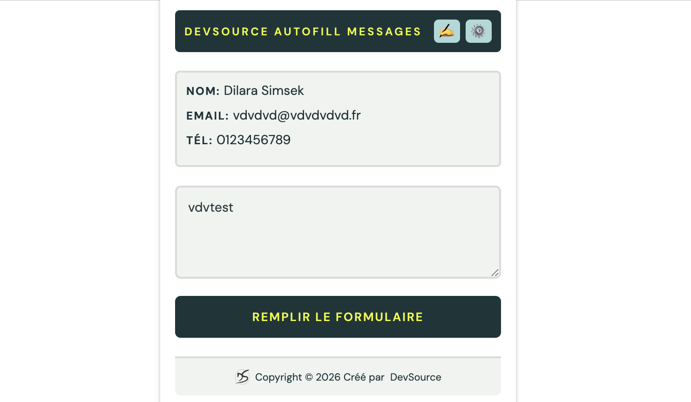

Mes Projets

Jeu MasterMind
Création d’un jeu Mastermind en Python avec gestion de logique de jeu, indices en temps réel et contrôle des entrées utilisateur.

Jeu du Loup et du Mouton
Simulation d'un loup et d'un mouton dans un labyrinthe, utilisant des algorithmes de recherche de chemin (pathfinding) pour illustrer une mécanique d'évasion et de poursuite.

Portfolio Web
Portfolio personnel conçu pour présenter mes compétences et projets, développé en HTML/CSS/JavaScript avec le framework Tailwind CSS. Ce projet démontre mes capacités en design d'interface, en ergonomie et en intégration front-end responsive.

Site Web de ToDo
Application To-Do List pour la gestion des tâches quotidiennes, développée en HTML/CSS/JavaScript avec un accent mis sur l'ergonomie, la lisibilité et la manipulation dynamique du DOM.

Site de Gestion des Absences
Plateforme de gestion des absences étudiantes permettant la déclaration et la justification en ligne. Le projet intègre un formulaire sécurisé, l'enregistrement automatisé dans une base de données et un tableau de bord centralisé pour simplifier la gestion administrative.

Extension SEO pour Chrome
Extension de navigateur (Chrome/Edge) dédiée à l'audit SEO en temps réel, permettant d'analyser instantanément la structure d'une page web, la validité de ses balises méta et l'optimisation de ses images pour le référencement.

Extension de Remplissage Automatique
Extension de productivité (Chrome) conçue pour automatiser la saisie de formulaires en ligne. Elle intègre un système de gestion de profils utilisateur et de templates de messages personnalisés pour optimiser, fluidifier et accélérer les tâches répétitives.